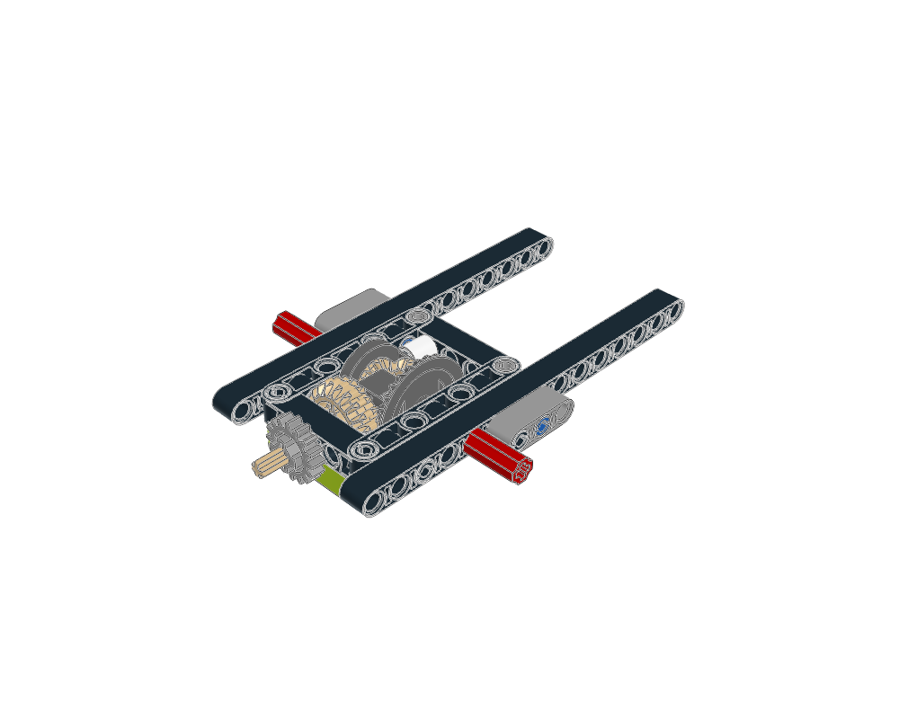
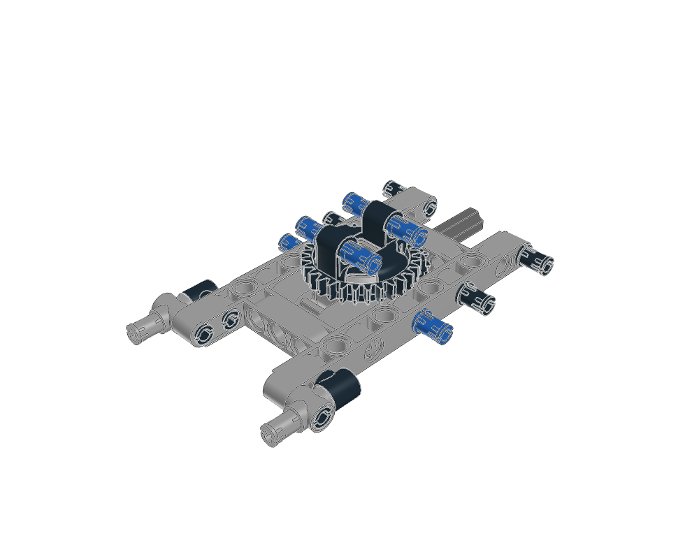
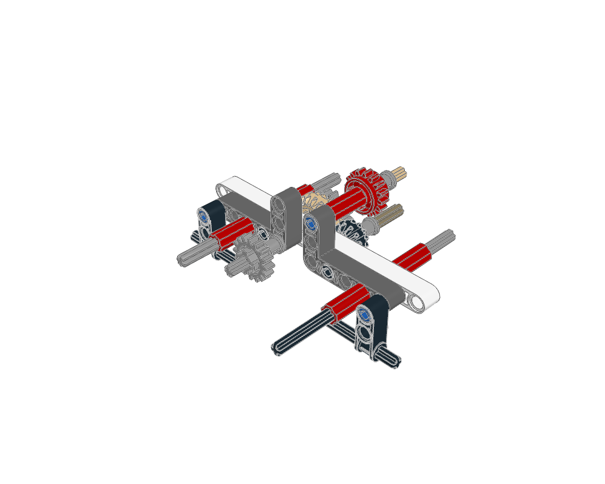
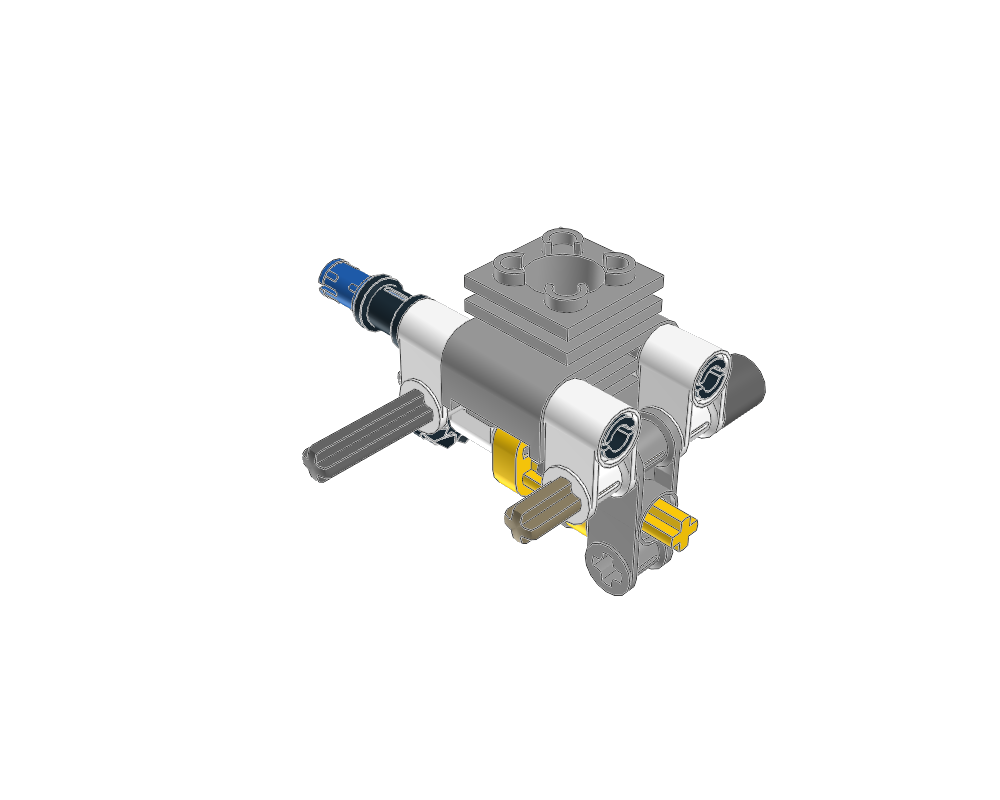
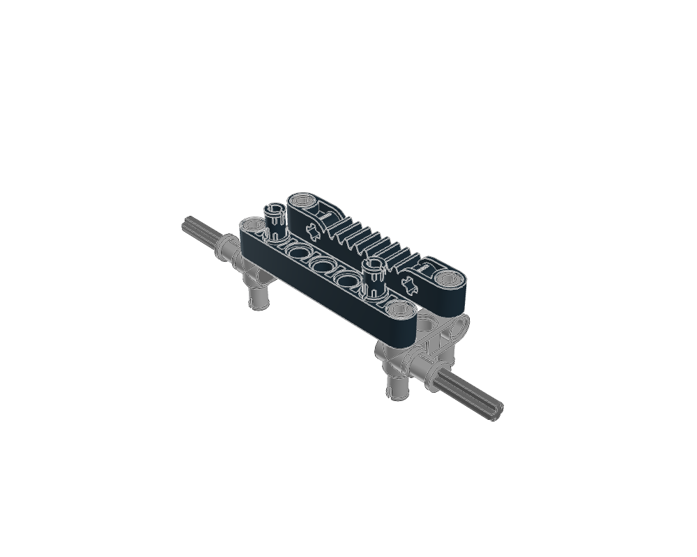
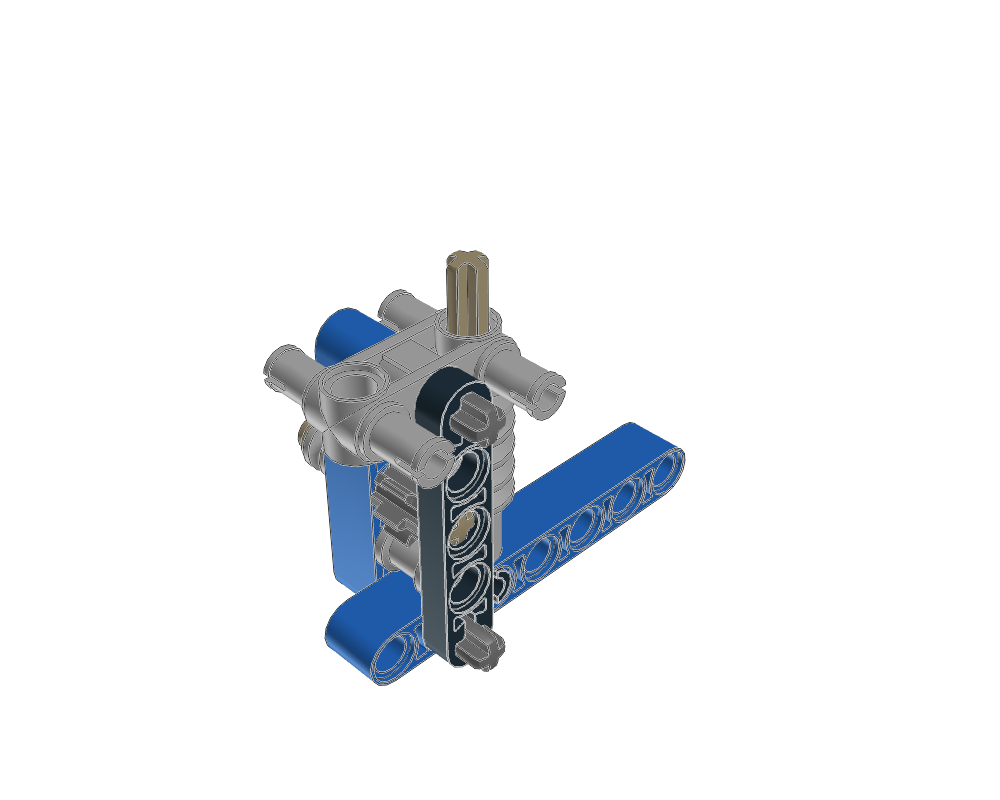

mechanism construction lessons
Generated from package READMEs. Inspiration, held, diagnostic and retired sources require explicit knowledge search scopes.

Differential-plus-axle-frame study. Open carrier, output sides, drive gear and surrounding beam supports are visible; source-parent view shows integration between wheel corners. Static images do not prove differential operation.
Static visual evidence only unless the linked package records specific further checks. Search eligibility does not certify fit, motion or strength.

Paired turntable halves, pin-equipped rotating attachment, drive gear and open base frame as one mounting study. Parent vehicle supplies external drive and attached load. Source pose only.
Static visual evidence only unless the linked package records specific further checks. Search eligibility does not certify fit, motion or strength.

Rename canonical key to gear-and-axle-module to match guide. Red elevated clutch gear and exposed axles depend on surrounding parent transmission. Do not offer as standalone reduction gearbox or infer a complete ratio from this extract.
Static visual evidence only unless the linked package records specific further checks. Search eligibility does not certify fit, motion or strength.

Single-cylinder display engine: exposed lower crank, rod and geared shaft agree with guide; upper piston is enclosed by the embedded cylinder part. Parent kart provides chassis and drivetrain. No motion or clearance proof.
Static visual evidence only unless the linked package records specific further checks. Search eligibility does not certify fit, motion or strength.

Rack carriage with beam carrier and steering connections. Driving pinion is absent from the extract and supplied by parent tractor. Search result must state this dependency.
Static visual evidence only unless the linked package records specific further checks. Search eligibility does not certify fit, motion or strength.

Worm shaft, small driven gear and layered supports. Parent supplies winding assembly; isolated module has no drum/cable and no demonstrated self-locking/load capacity.
Static visual evidence only unless the linked package records specific further checks. Search eligibility does not certify fit, motion or strength.